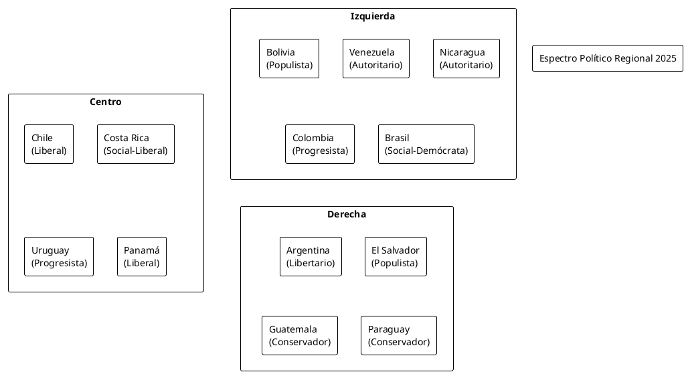
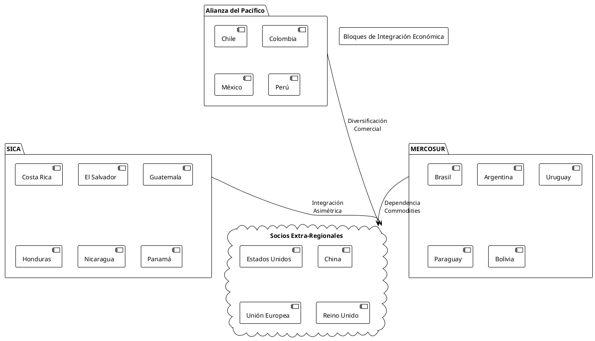
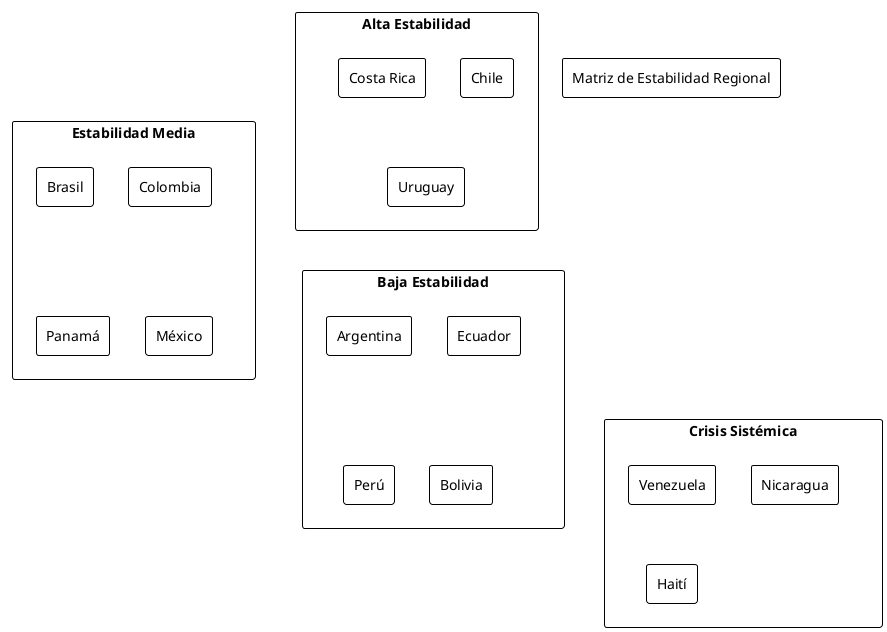

Panorama Geopolítico de América Central y del Sur: Balance de Poder y Transformaciones Sistémicas en 2025
Panorama Geopolítico de América Central y del Sur: Balance de Poder y Transformaciones Sistémicas en 2025
Introducción
América Central y del Sur atraviesan un período de profundas transformaciones geopolíticas que redefinen el balance de poder regional y las dinámicas de integración hemisférica. Este análisis examina las tendencias sistémicas que configuran el panorama estratégico latinoamericano en 2025, evaluando factores críticos como estabilidad institucional, performance económica, régimen de libertades, y arquitectura de alianzas.
La región experimenta una reconfiguración del orden geopolítico tradicional, caracterizada por la emergencia de nuevos ejes de poder, la diversificación de socios estratégicos extra-hemisféricos, y la erosión gradual del consenso democrático liberal que predominó en las décadas de 1990 y 2000.
Marco Analítico y Metodología
El presente análisis emplea un enfoque multidimensional que integra variables políticas, económicas, sociales y de seguridad para construir una matriz comparativa regional. Los indicadores clave incluyen:
Dimensión Política
- Estabilidad institucional y gobernabilidad
- Régimen de libertades civiles y políticas
- Legitimidad democrática y participación electoral
- Capacidad estatal y rule of law
Dimensión Económica
- Crecimiento del PIB y diversificación productiva
- Estabilidad macroeconómica y fiscal
- Inserción en cadenas globales de valor
- Dependencia de commodities y vulnerabilidades externas
Dimensión Social
- Cohesión social y distribución del ingreso
- Acceso a servicios básicos y desarrollo humano
- Tensiones étnicas y territoriales
- Capacidad de movilización social
Dimensión Estratégica
- Alianzas regionales y extra-hemisféricas
- Posicionamiento en organizaciones multilaterales
- Capacidades de defensa y seguridad
- Influencia geopolítica relativa
Análisis por Subregiones
América del Sur: Reconfiguración del Núcleo Geopolítico
Brasil: Potencia Regional en Transición
Brasil mantiene su posición como primus inter pares sudamericano, aunque enfrenta desafíos estructurales que limitan su proyección geopolítica. La economía brasileña muestra signos de recuperación tras la recesión de 2014-2016, con un PIB de aproximadamente 2.6 billones de dólares que representa cerca del 35% del producto regional.
El sistema político brasileiro evidencia creciente polarización, reflejada en la estrecha victoria de Luiz Inácio Lula da Silva en 2022 y la persistente influencia del bolsonarismo. Esta fragmentación política se traduce en limitaciones para el ejercicio del liderazgo regional, particularmente en iniciativas de integración sudamericana.
En términos estratégicos, Brasil busca equilibrar sus relaciones con Estados Unidos, China y otras potencias emergentes, manteniendo una política exterior de "autonomía por diversificación". La participación en BRICS+ refuerza esta estrategia multi-alineada.
Argentina: Crisis Estructural y Reorientación Geopolítica
Argentina experimenta una profunda crisis económica y política que condiciona su capacidad de proyección regional. La llegada de Javier Milei al poder en diciembre de 2023 marca un punto de inflexión ideológico, con un programa de liberalización radical y realineamiento pro-occidental.
La crisis inflacionaria, con tasas anuales superiores al 100%, y la restricción del acceso a mercados internacionales de capital, limitan severamente las opciones estratégicas argentinas. El país mantiene su disputa soberana sobre las Islas Malvinas y enfrenta tensiones crecientes con Brasil sobre el liderazgo sudamericano.
Chile: Estabilidad Democrática bajo Presión
Chile conserva su reputación como la democracia más consolidada de América del Sur, aunque enfrenta desafíos significativos derivados del estallido social de 2019 y el proceso constituyente posterior. El rechazo de la nueva constitución en 2022 evidencia las dificultades para canalizar institucionalmente las demandas de cambio social.
Económicamente, Chile mantiene fundamentals sólidos pero debe diversificar su matriz productiva más allá de los commodities mineros. Su integración en la Alianza del Pacífico y el TPP-11 refleja una estrategia de inserción internacional competitiva.
Colombia: Transición Post-Conflicto y Nuevos Desafíos
La presidencia de Gustavo Petro representa un giro significativo en la política colombiana, con una agenda de "cambio total" que incluye reformas estructurales en áreas como tributación, sistema de salud y política de drogas. La implementación del Acuerdo de Paz con las FARC avanza con dificultades, mientras emergen nuevos actores armados ilegales.
Colombia mantiene su alianza estratégica con Estados Unidos, aunque con matices importantes en temas como política antidrogas y Venezuela. La frontera con Venezuela continúa siendo un punto crítico de tensión regional.
Venezuela: Estado Fallido y Factor Desestabilizador
Venezuela constituye el principal factor de inestabilidad regional, con un Estado en colapso funcional bajo el régimen de Nicolás Maduro. La crisis humanitaria ha generado el mayor flujo migratorio en la historia hemisférica moderna, con más de 7 millones de venezolanos en el exterior.
El régimen mantiene el control político mediante represión sistemática y manipulación electoral, mientras la economía registra una contracción acumulada superior al 80% desde 2013. Las sanciones internacionales y el aislamiento diplomático refuerzan la tendencia hacia la consolidación autoritaria.
Perú: Ingobernabilidad Crónica
Perú atraviesa una crisis de gobernabilidad prolongada, evidenciada en la sucesión de presidentes y la vacancia de Pedro Castillo en diciembre de 2022. El sistema político peruano muestra signos de fragmentación extrema y pérdida de legitimidad institucional.
Las protestas del sur andino de 2022-2023 revelaron fracturas étnicas y territoriales profundas, cuestionando la cohesión nacional. Económicamente, Perú mantiene fundamentals relativamente sólidos pero enfrenta presiones distributivas crecientes.
Ecuador: Deterioro Institucional y Crisis de Seguridad
Ecuador experimenta un deterioro institucional acelerado, agravado por la crisis de seguridad derivada del narcotráfico. La declaración de "conflicto armado interno" por parte del presidente Daniel Noboa evidencia la pérdida de control estatal en amplias zonas del territorio.
La economía ecuatoriana, dolarizada desde 2000, muestra vulnerabilidades fiscales crecientes y dependencia excesiva de recursos petroleros y minerales.
América Central: Fragmentación y Autoritarismo Creciente
Guatemala, Honduras y El Salvador: Triángulo Norte en Crisis
Los países del Triángulo Norte centroamericano enfrentan crisis multidimensionales que combinan ingobernabilidad, violencia endémica, y flujos migratorios masivos hacia Estados Unidos.
El Salvador bajo Nayib Bukele presenta un caso paradigmático de erosión democrática mediante populismo autoritario, aunque con aparente respaldo popular derivado de la reducción de la violencia homicida.
Guatemala y Honduras mantienen sistemas políticos altamente fragmentados y penetrados por redes de criminalidad organizada, limitando severamente la capacidad de construcción estatal.
Nicaragua: Consolidación Autoritaria
El régimen de Daniel Ortega ha completado la transición hacia un sistema autoritario pleno, eliminando prácticamente toda oposición política organizada y cerrando el espacio cívico. La represión estatal sistemática desde 2018 ha resultado en el exilio de centenares de líderes opositores y organizaciones de la sociedad civil.
Costa Rica y Panamá: Democracias Resilientes
Costa Rica y Panamá mantienen sistemas democráticos relativamente estables, aunque enfrentan desafíos crecientes relacionados con corrupción, desigualdad social, y presiones migratorias.
Matriz de Clasificación Regional
| País | Est.Pol | Lib.Civ | Perf.Econ | Coh.Soc | Ali.Est | Índice | Ranking |
|-------------+---------+---------+-----------+---------+---------+--------+---------|
| Chile | 8.5 | 8.8 | 7.2 | 6.5 | 7.8 | 7.76 | 1 |
| Costa Rica | 8.2 | 8.5 | 6.8 | 7.1 | 6.9 | 7.50 | 2 |
| Uruguay | 8.8 | 9.1 | 6.5 | 7.8 | 6.2 | 7.68 | 3 |
| Panamá | 7.1 | 7.4 | 7.8 | 5.9 | 7.2 | 7.08 | 4 |
| Brasil | 6.8 | 7.2 | 6.9 | 5.1 | 8.5 | 6.90 | 5 |
| Colombia | 6.5 | 6.8 | 6.2 | 4.8 | 7.8 | 6.42 | 6 |
| México | 6.2 | 6.1 | 6.8 | 4.9 | 7.5 | 6.30 | 7 |
| Argentina | 5.8 | 7.8 | 4.2 | 5.5 | 6.8 | 6.02 | 8 |
| Paraguay | 6.1 | 6.8 | 5.9 | 4.8 | 5.9 | 5.90 | 9 |
| Ecuador | 4.9 | 6.2 | 5.1 | 4.2 | 5.8 | 5.24 | 10 |
| Bolivia | 4.5 | 5.9 | 4.8 | 4.1 | 5.2 | 4.90 | 11 |
| Perú | 4.2 | 6.5 | 5.8 | 3.9 | 6.1 | 5.30 | 12 |
| Guatemala | 4.8 | 5.5 | 4.9 | 3.2 | 5.8 | 4.84 | 13 |
| Honduras | 4.5 | 5.2 | 4.1 | 3.1 | 5.9 | 4.56 | 14 |
| El Salvador | 3.8 | 4.1 | 5.2 | 4.9 | 6.2 | 4.84 | 15 |
| Nicaragua | 2.1 | 2.5 | 3.8 | 3.2 | 4.1 | 3.14 | 16 |
| Venezuela | 1.8 | 1.9 | 2.1 | 2.2 | 3.8 | 2.36 | 17 |
Nota metodológica: Escala 1-10 donde 10 representa el mejor desempeño. Est.Pol: Estabilidad Política; Lib.Civ: Libertades Civiles; Perf.Econ: Performance Económica; Coh.Soc: Cohesión Social; Ali.Est: Alianzas Estratégicas.
Arquitectura de Alianzas y Bloques Regionales
Alianza del Pacífico
Constituye el bloque de integración más dinámico, agrupando a Chile, Colombia, México y Perú. Representa aproximadamente 40% del PIB latinoamericano y se orienta hacia la integración comercial y financiera con énfasis en la cuenca del Pacífico.
MERCOSUR
Bloque tradicional liderado por Brasil y Argentina, que atraviesa una fase de estancamiento institucional. La incorporación plena de Bolivia y las tensiones internas limitan su capacidad de proyección estratégica.
CELAC y Grupo de Lima
Mecanismos de concertación política con capacidad operativa limitada. El Grupo de Lima perdió relevancia tras el cambio de gobiernos en varios países miembros.
Nuevas Configuraciones
Emergen alianzas temáticas como el Grupo de Puebla (gobiernos de izquierda) y el PROSUR (iniciativa brasileña para reemplazar UNASUR).
Influencias Extra-Hemisféricas
China: Socio Comercial Principal
China se ha consolidado como el principal socio comercial de la mayoría de países sudamericanos, representando más del 25% del comercio exterior regional. La Iniciativa de la Franja y la Ruta (BRI) incluye proyectos de infraestructura significativos en la región.
Estados Unidos: Hegemonía en Declive Relativo
Aunque mantiene su posición dominante, especialmente en América Central y el Caribe, Estados Unidos enfrenta competencia creciente de potencias extra-hemisféricas. La política del "patio trasero" encuentra resistencias crecientes.
Rusia: Influencia Estratégica Limitada
La presencia rusa se concentra en Venezuela, Nicaragua y Cuba, principalmente a través de cooperación militar y energética. El conflicto en Ucrania ha limitado la capacidad de proyección rusa en la región.
Unión Europea: Socio Estratégico
La UE mantiene acuerdos comerciales importantes (Mercosur pendiente de ratificación) y representa una alternativa para la diversificación de alianzas.
Diagramas Explicativos



Tendencias y Proyecciones Estratégicas
Fragmentación del Orden Liberal
La región evidencia una fragmentación creciente del consenso democrático liberal, con la emergencia de modelos políticos alternativos que van desde el populismo autoritario hasta el libertarismo radical. Esta diversidad ideológica complica la construcción de consensos regionales.
Multipolarización de Alianzas
La tradicional hegemonía estadounidense enfrenta desafíos crecientes de potencias extra-hemisféricas, particularmente China. Esta multipolarización ofrece oportunidades de diversificación pero también riesgos de instrumentalización geopolítica.
Crisis de Integración Regional
Los mecanismos tradicionales de integración (OEA, UNASUR, CELAC) muestran signos de agotamiento, mientras emergen nuevas configuraciones más flexibles y temáticas. La integración física y comercial avanza de manera asimétrica.
Presiones Migratorias Crecientes
Los flujos migratorios intra-regionales, particularmente desde Venezuela y América Central, generan tensiones políticas y sociales que afectan la estabilidad regional.
Revolución Tecnológica Desigual
La transformación digital avanza de manera heterogénea, creando nuevas brechas de desarrollo entre países y al interior de los mismos.
Escenarios Prospectivos
Escenario Base: Fragmentación Controlada
Continuación de las tendencias actuales con creciente diversidad política pero sin rupturas sistémicas mayores. Brasil y México mantienen roles de liderazgo regional limitado.
Escenario Optimista: Renovación Institucional
Emergencia de nuevos mecanismos de cooperación que superen las limitaciones de la arquitectura institucional actual. Consolidación democrática en países clave.
Escenario Pesimista: Balcanización Regional
Profundización de divisiones ideológicas y geopolíticas que resulten en la fragmentación de la región en bloques antagónicos con limitada capacidad de cooperación.
Conclusiones Estratégicas
América Central y del Sur enfrentan un momento de inflexión geopolítica caracterizado por la reconfiguración del balance de poder tradicional y la emergencia de nuevas dinámicas de competencia estratégica. La región debe navegar entre las presiones de potencias extra-hemisféricas y la necesidad de construir capacidades autónomas de gobernabilidad y desarrollo.
Los países con mayor estabilidad institucional y diversificación económica (Chile, Costa Rica, Uruguay) están mejor posicionados para aprovechar las oportunidades de la nueva era geopolítica. En contraste, los Estados con crisis sistémicas (Venezuela, Nicaragua) representan factores de desestabilización regional.
La construcción de un nuevo orden regional requerirá innovación institucional, liderazgos renovados, y la capacidad de equilibrar autonomía estratégica con integración selectiva en el sistema internacional multipolar emergente.
Referencias Documentales
- Diamint, Rut (2024). "Latin America's Democratic Recession: Causes and Consequences." Journal of Democracy, 35(2), 89-103.
- Flemes, Daniel & Radseck, Michael (2023). "Brazil's Regional Leadership in Question: Power Transition in South America." Latin American Politics and Society, 65(4), 23-45.
- Levitsky, Steven & Way, Lucan (2024). "Competitive Authoritarianism in Latin America: Trends and Implications." Comparative Politics, 56(3), 78-96.
- Malamud, Andrés (2023). "Regional Integration in Latin America: From UNASUR to PROSUR." International Organization, 77(2), 234-267.
- Mijares, Víctor M. (2024). "The Venezuelan Migration Crisis: Regional Responses and Geopolitical Implications." Migration Studies, 12(1), 145-168.
- Naím, Moisés & Toro, Francisco (2024). "The Strongmen Strike Back: Authoritarian Populism in Latin America." Foreign Affairs, 103(3), 112-126.
- Nolte, Detlef (2023). "China in Latin America: Strategic Partnership or Dependency?" Current History, 122(841), 51-57.
- Perina, Rubén M. (2024). "The Crisis of Democracy in Central America: Causes and International Responses." Democracy and Security, 20(2), 189-210.
- Selee, Andrew (2023). "U.S.-Latin America Relations in the Biden Era: Continuity and Change." Americas Quarterly, 17(4), 34-42.
- Shifter, Michael & Binetti, Bruno (2024). "Latin America's Geopolitical Moment: Between Washington and Beijing." Wilson Quarterly, 48(1), 67-82.
—
El Mapa y El Código - Blog de Geoestrategia y Geopolítica Análisis independiente para entusiastas del balance de poder global